De specialisten van Decoriginals
Praktisch in aanpak, breed in kennis
- 30 vaste collega's, korte lijnen
- Eén projectmanager als vast aanspreekpunt
- Erkend leerbedrijf, we leiden vakmensen op


Jouw fullservice projectmanager
Van stoffeerder tot totaalpartner
Stofferen en aankleden, daar begon het voor ons ooit mee. Rigging kwam erbij, we breidden onze diensten uit en werden totaalleverancier. Een rol die ons prima lag, maar de lading niet meer dekt.
Decoriginals anno nu is simpelweg het volledige pakket. Je schakelt met een fullservice projectmanager die grip en zicht heeft op het hele proces. Een partner die continu vooruit wil en met jou zoveel mogelijk waardevolle ontmoetingen creëert.
Ieder bij zijn vakgebied
Ontmoet de specialisten
Kernteam
De drie eigenaren van Decoriginals.
3 collega's- Arno de LeijerEigenaar
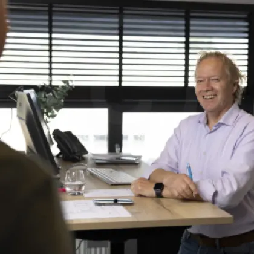
- Gawijn RijkenEigenaar
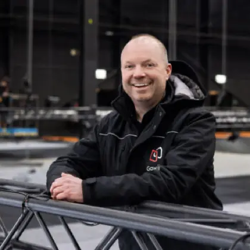
- Lukas van DamEigenaar
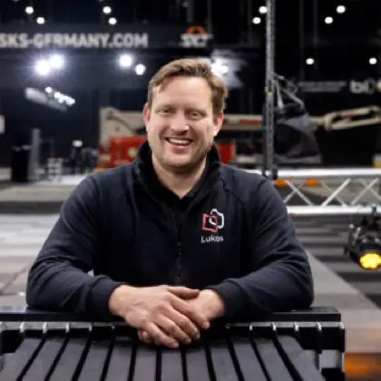
Projectmanagement
Jouw vaste aanspreekpunt, van inventarisatie tot evaluatie.
5 collega's- Tom van den HoogenhofProjectmanager (teamlead)
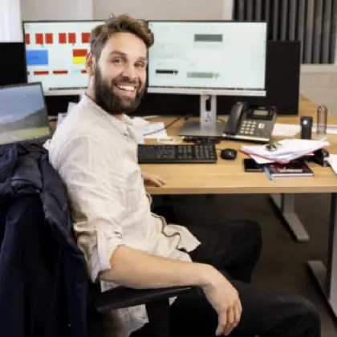
- Lars GöbelProjectmanager
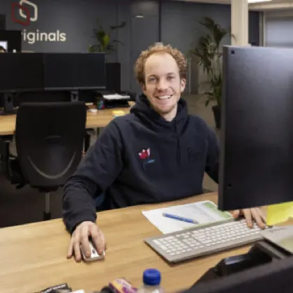
- Freek StapsProjectmanager
- Jeroen MaasProjectmanager

- Femke FensProjectmanager en projectsupport
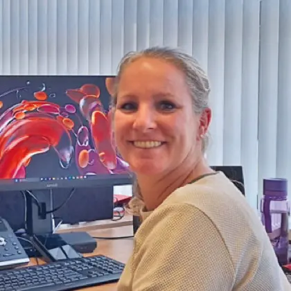
Projectsupport
Planning, werkvoorbereiding, systemen en financiën.
6 collega's- Henriëtte van HirtumOfficemanager (teamlead)
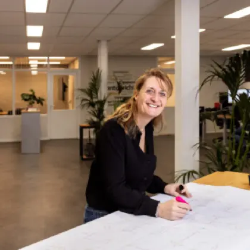
- Damon van der VoortWerkvoorbereider

- Rafiq van KanWerkvoorbereider
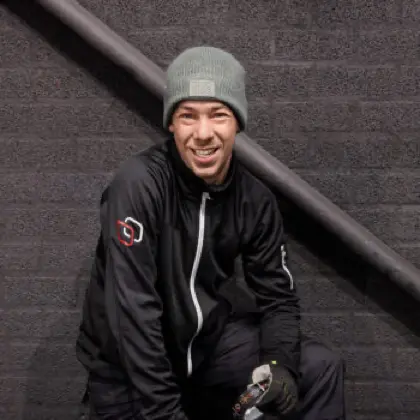
- Jelle SlabbekoornWerkvoorbereider
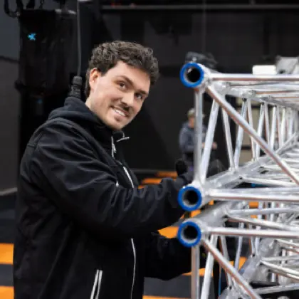
- Veda VerberneProjectsupport medewerker
- Renate BoerFinancieel medewerker
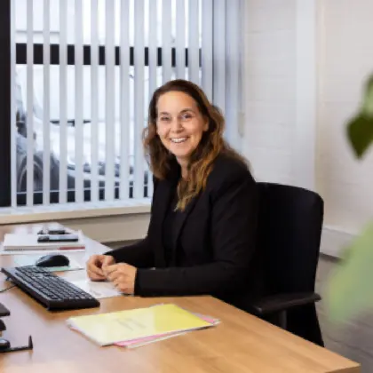
Operationeel management
Planning op de vloer en logistiek.
2 collega's- Katja StekelenburgCoördinator planning
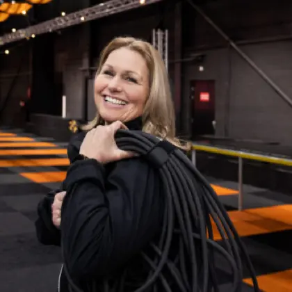
- Leon RaymakersOperationeel manager
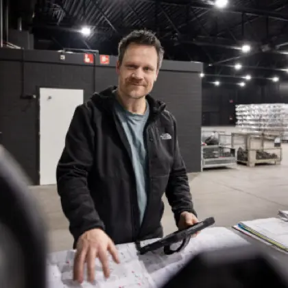
Productieleiding
Zij leiden de opbouw en Deco Systems.
2 collega's- Berry van GeelDeco Systems
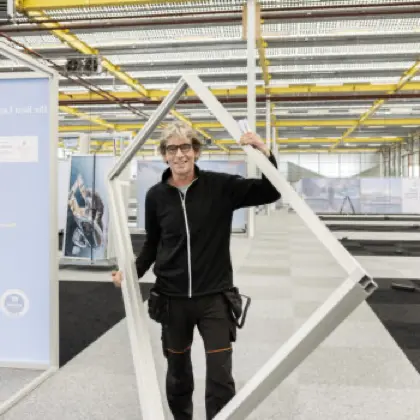
- Sam de ManProductieleider
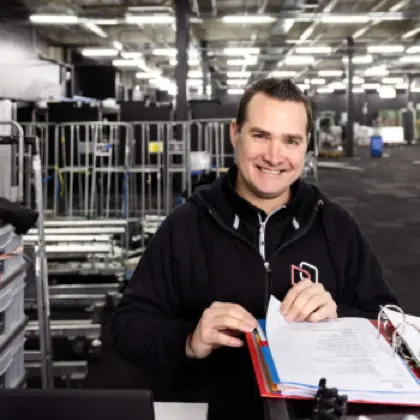
Operatie
De bouwers, riggers en confectie die het neerzetten.
8 collega's- Angela den TekConfectie medewerker
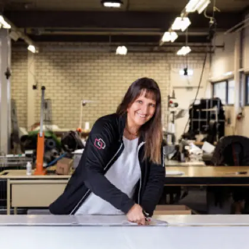
- Christian HemmenOperationeel medewerker
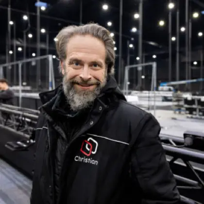
- Joran LeendersOperationeel medewerker
- Julian DullerOperationeel medewerker
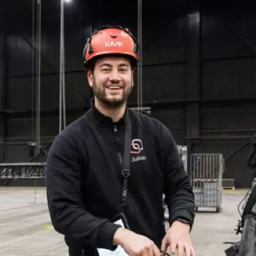
- Kjeld van NunenOperationeel medewerker
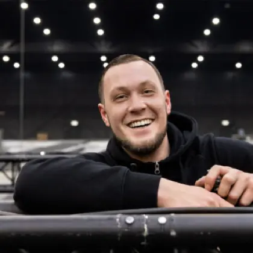
- Mike van ValkengoedOperationeel medewerker
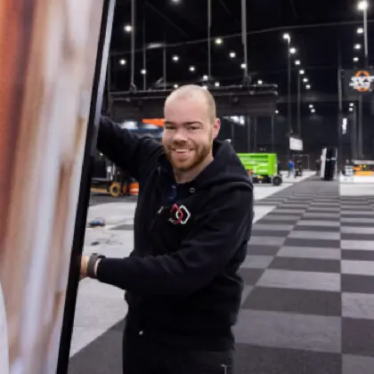
- Thom HartmanOperationeel medewerker
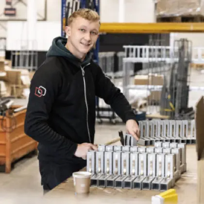
Wij zijn Decoriginals
Waar je ons aan herkent
Vier waarden die je merkt, van de eerste afspraak tot de laatste kist.
Plezier
Inspirerend en enthousiast, gemoedelijk en gezellig. We doen wat we leuk vinden, het is simpelweg onze basis.
Authentiek
We zijn allemaal anders en durven ons te onderscheiden. Divers maakt uniek en zorgt voor de beste ideeën.
Ontwikkeling
De beste versie van onszelf, daar gaan we voor. We leren, groeien en vernieuwen, en bewegen soepel mee.
Eerlijk
We komen onze afspraken na. Altijd. Voor en met wie we ook werken.

100% duurzaam duurt het langst
Groen, en voor de lange termijn
- Deco Systems: hergebruik staat voorop
- Ons pand werkt volledig gasloos
- Warmtepompen en zonnepanelen leveren de energie
Duurzaam is ook de relatie met opdrachtgevers en medewerkers: gebaseerd op vertrouwen en wederzijds respect. Het is de rode draad bij alles wat we doen.